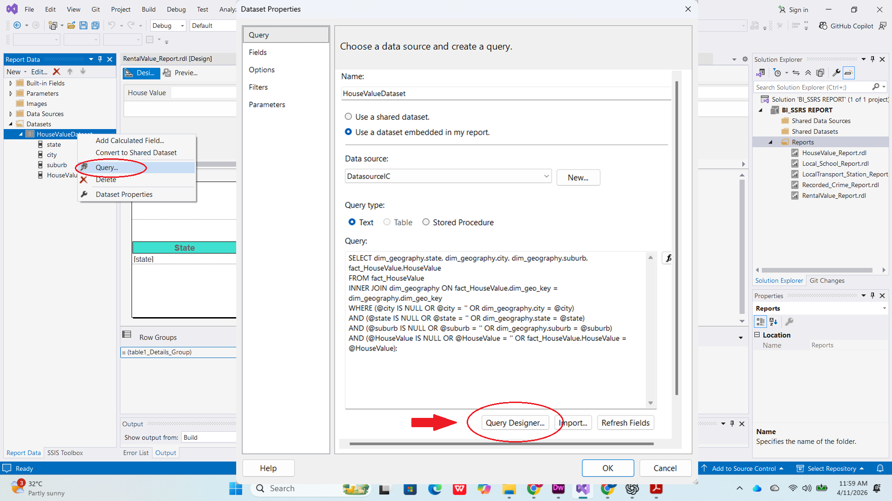
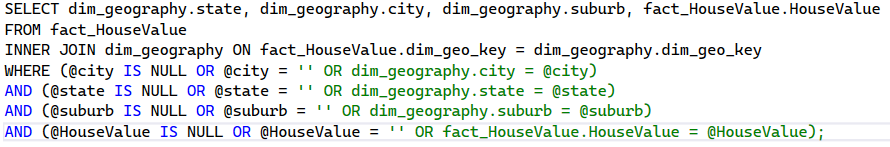
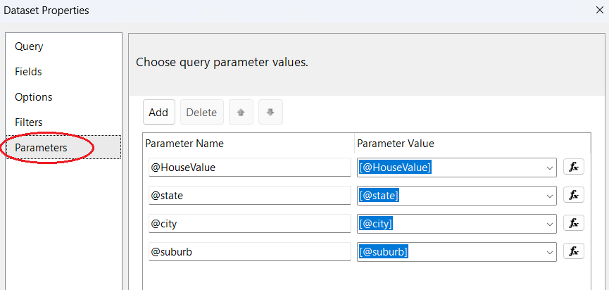
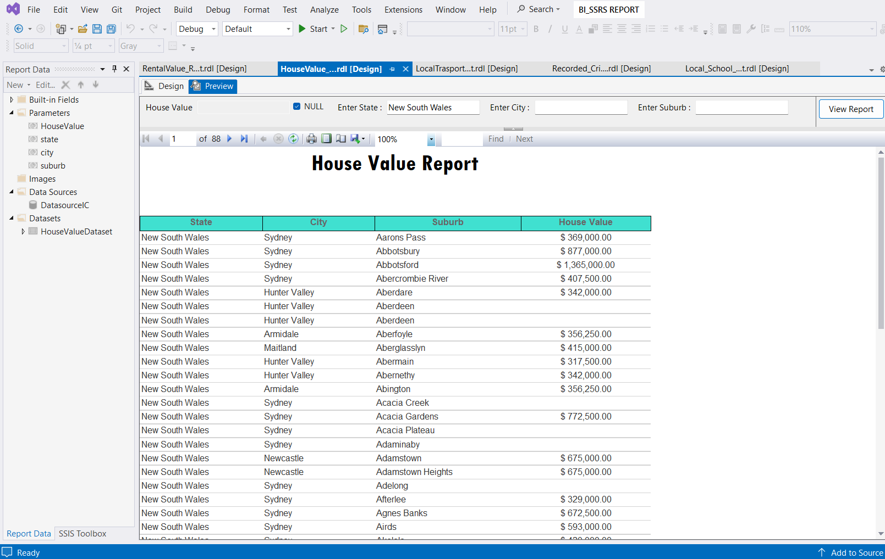
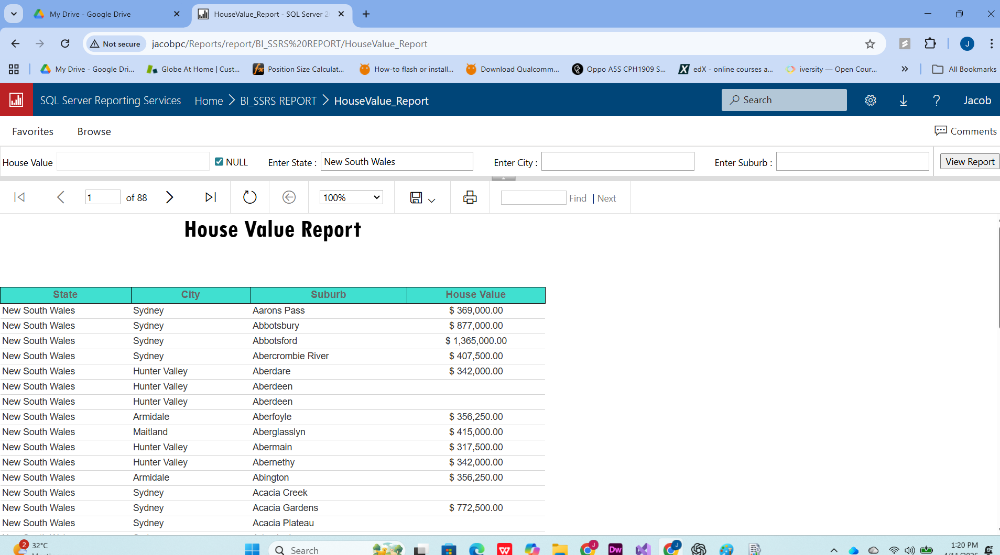
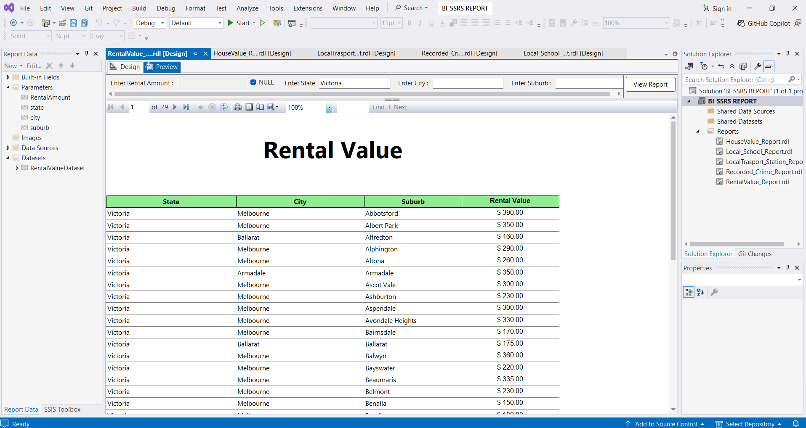
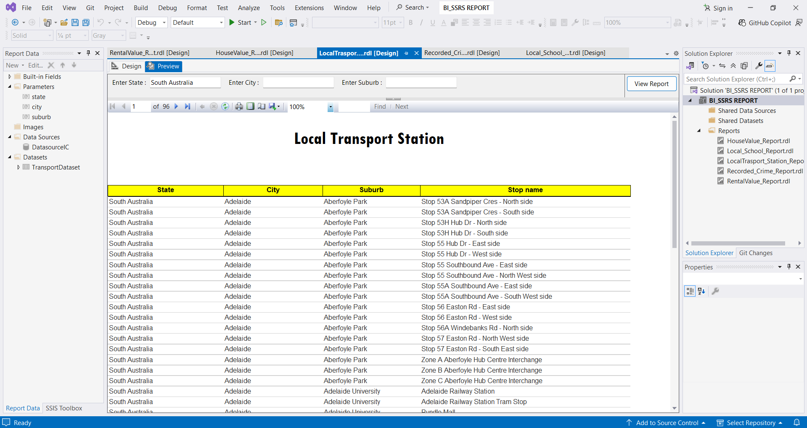
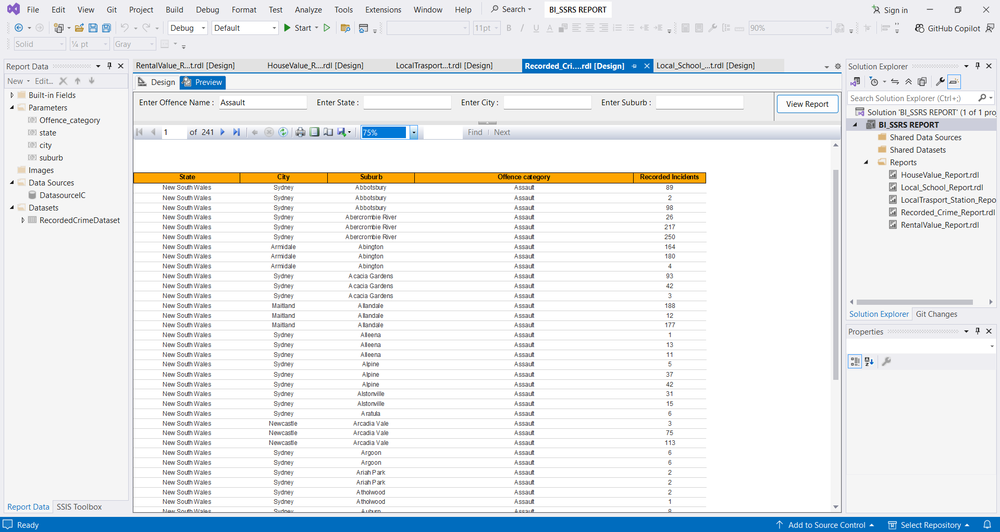
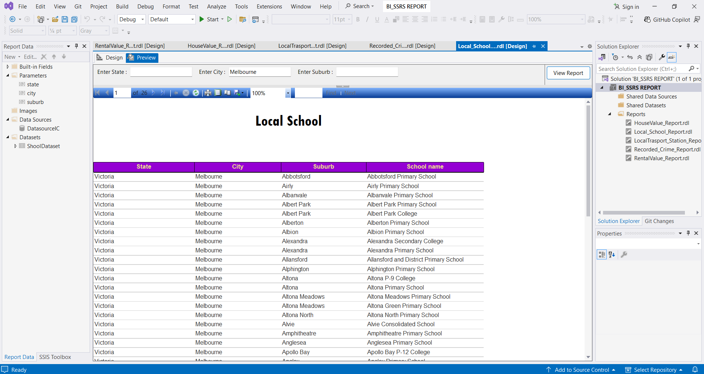

SQL Server Reporting Services (Australian Dataset)
“In this task consolidated data from the Australian Dataset was used to create a paginated report using SQL Server Reporting Services (SSRS) Report”
To Start with, the first thing weve done was to import the consolidated data from our datawarehouse into the Report Server Project in Visual Studio
In designing my SSRS Report, I incorporated key parameters, primarily location-based filters such as state, city, and suburb, along with monetary values and crime-related data using the Query designer.

To ensure flexibility on data retrieval, I designed the system to return results even when no filters are selected, or when only some filters are used. This allows users to see a complete overview or narrow down the data based on specific needs.
Below are pictures of the Query and settings implemented in Visual Studio


By implementing this methodology, I effectively deliver refined and highly specific insights to stakeholders who require granular data for decision-making
Now we can view the paginated report in Visual Studio preview pane and web portal


Lastly, the same process was implemented on other essential australian dataset to produce a meaningful paginated report



